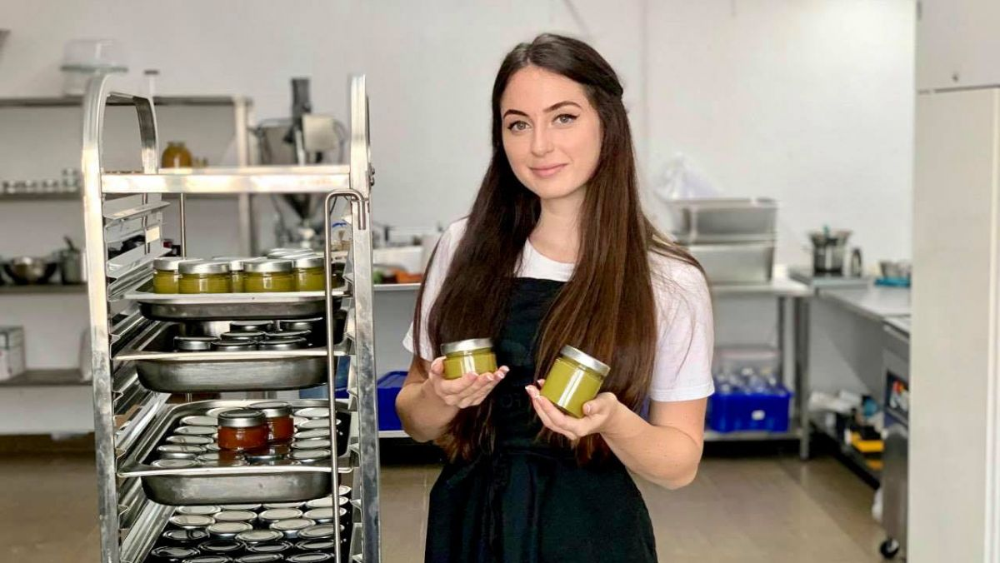
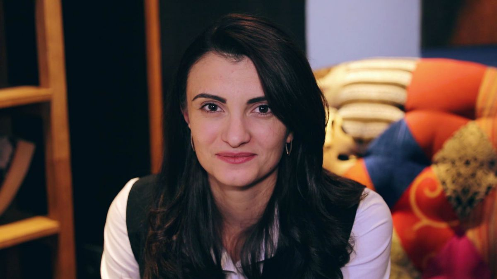
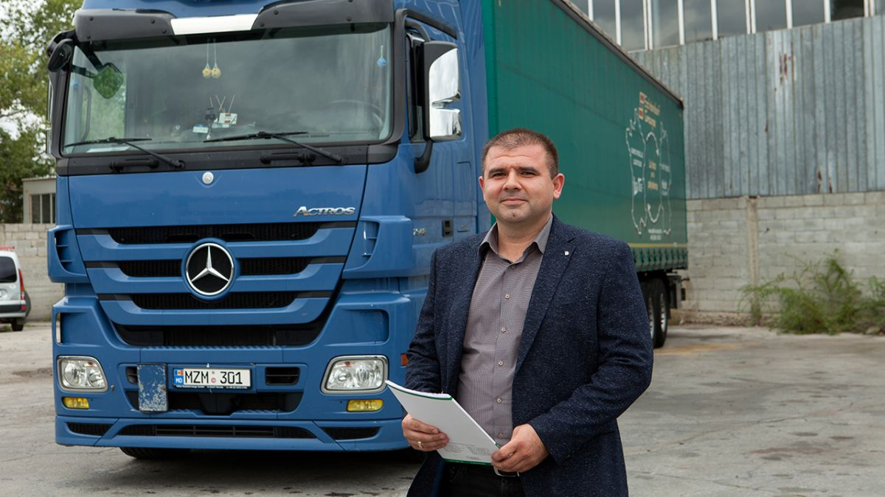
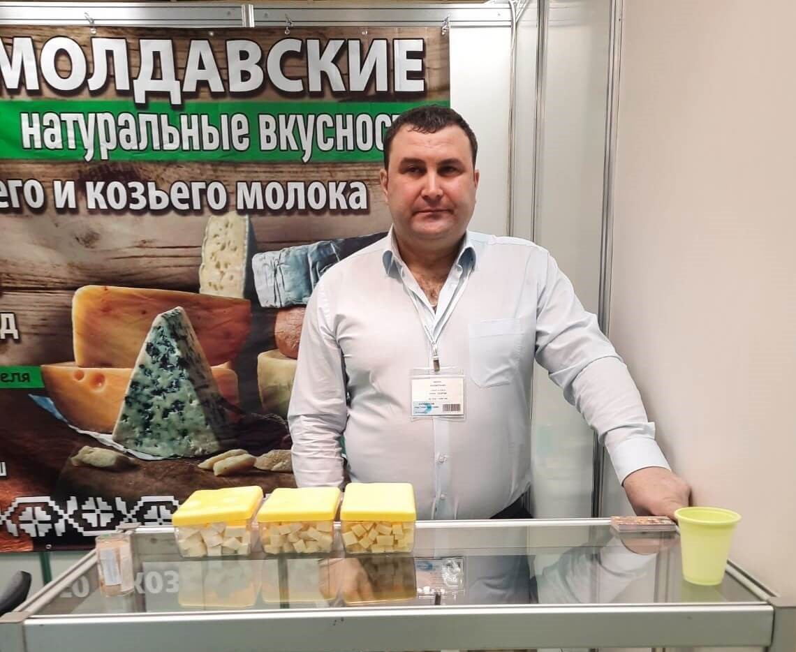

Istorii
Nadejda Hadjivu produce pastă de nuci și ciocolate sănătoase
Femeile antreprenoare combat din ce în ce mai des stereotipurile de gen și obstacolele cu care s-au confruntat pe parcursul anilor. Nadejda Hadjivu a revenit în Republica Moldova după o perioadă pe care a petrecut-o în Statele Unite, locul care i-a servit drept inspirație pentru businessul pe care l-a lansat acasă. Tânăra, fondatoarea afacerii „Moft Dulce”, promovează un stil de viață sănătos prin utilizarea produselor autohtone. Aceasta produce pastă de nuci și ciocolate sănătoase, fără zahăr de sfeclă, gluten, sau lactate. „Când am revenit acasă am observat că prin magazine nu este asortiment atât de mare. Este doar pastă de arahide cu ulei de palmier și cu diferite adaosuri și zahăr. Astfel, am început să produc dulciuri și alternative sănătoase. Folosesc ingrediente sănătoase, stevia, zahăr de cocos, produse care sunt indicate și copiilor. Pe piața noastră de desfacere sunt prea multe produse alimentare necalitative”, spune Nadejda. În mare parte, Nadejda folosește produse locale, mai cu seamă alunele. Iar pe lângă faptul că se ocupă și de găsirea materiei prime, femeia deține și multe alte roluri în compania pe care a deschis-o. „Alunele de pădure le cumpăr de la o doamnă de la noi care are alune ecologice foarte dulci. Nucile caju le import și arahidele la fel, dar majoritatea produselor sunt locale. (...Eu lucrez și cu tehnologia, sunt și șefă de producție și directoare și contabilă și duc evidența afacerilor. Așa cum volumul de lucru crește, lucrez împreună și cu un tânăr tehnolog care mă ajută. Cu ceva timp în urmă producția era 50-70 de kilograme pe oră pentru pasta de nuci, dar moara nouă, din utilajul pe care l-am cumpărat cu ajutorul grantului ODIMM și UN Women, poate produce până la o tonă”, spune ea. Tânăra antreprenoare spune că la începutul parcursului său a făcut multe greșeli, din lipsa de cunoștințe în domeniul afacerilor, iar pe lângă asta a avut nevoie să depună și mai mult efort pentru a fi luată în serios atunci când a decis să își legalizeze businessul. „Cred că 80% din ce am făcut au fost greșeli. Am început producția fără multe cunoștințe și am învățat din greșeli. Am ars peste 100 de kilograme de nuci testând. Mulți oameni, văzându-te tânără, poate nu te iau în serios, mai cu seamă când trebuie să faci afacerea oficială, Trebuie să fii foarte insistentă, și să mergi mai departe spre visurile tale. La început mulți spuneau că nu va fi posibil, că o să ne închidem, dar deja avem un an”, a spus Nadejda. În final, tânăra spune că are ambiția de a ajunge și pe piața din România, lucru care, crede ea, este posibil și în baza exemplelor altor afaceri locale care au reușit acest lucru.
Marina Andreev a creat o afacere la sat și a demonstrat că omul sfințește locul
Era foarte tânără când a pășit în lumea dură a afacerilor. Cu ambiție, perseverență și multă muncă a reușit să deschidă o întreprindere de confecționare a uniformelor și a creat 15 locuri de muncă pentru 15 femei din satul Ustia, raionul Dubăsari. Este vorba despre Marina Andreev, antreprenoarea care, datorită unui grant oferit de către Uniunea Europeană, a demonstrat că și în mediul rural pot fi puse pe roate afaceri de succes. „Când am obținut grantul de la Uniunea Europeană, pentru că datorită acestui grant a fost deschisă afacerea, eram după ultimul an de facultate. Practic eram super-tânără. Experiența era la zero. Am creat locuri de muncă pentru femei anume în sectorul rural, la acel moment în sat nu era nicio întreprindere la care femeile să-și găsească de lucru. Cu ajutorul grantului am deschis această afacere. Dacă nu era grantul cred că nu mai eram acum femeie de afaceri și nu mai aveam întreprinderea creată. Poate aș fi fost undeva peste hotarele țării muncind la un job obișnuit cum fac mulți alți concetățeni de-ai noștri”, povestește Marina Andreev. Antreprenoarea spune că una dintre cele mai mari împliniri pe care le are ține de faptul că a reușit să le ofere femeilor din satul Ustina șansa de a munci acasă, alături de familie. Femeia spune că obținerea grantului financiar oferit de către UE i-a oferit mai multă încredere în forțele proprii: „A fost impulsul care m-a ajutat. Au trecut patru ani de atunci, iar noi lucrăm, încercăm să dezvoltăm. Primii trei ani, cei mai grei de la început noi i-am trecut. Nu a fost atât de ușor să primim grantul. A fost un concurs de bussines-planuri. Bussines-planul l-am scris singură. Cred că cea mai importantă a fost ideea și numărul de locuri de muncă create. Comparativ cu alte proiecte, la mine a fost unul dintre acelea care crea multe locuri de muncă”.
Igor Rusnac, client Microinvest, fondatorul unei afaceri în domeniul transporturilor internaționale de mărfuri
Pe iarnă sau vară, pandemie sau perioade obișnuite, șoferii de camioane sunt cei care asigură transportarea internațională a mărfurilor în întreaga lume, parcurgând drumuri lungi și tot felul de situații la volanul tirului, până a ajunge în siguranță la punctul final al destinației. Igor Rusnac știe pe propria piele cum e să conduci un camion de mare tonaj. Începând cu anul 2018 și-a fondat propria companie de transporturi rutiere internaționale, cu rute spre Georgia, Turcia, Rusia și alte direcții. Cu ajutorul suportului financiar de la Microinvest, a reușit să își extindă afacerea, achiziționând noi capuri tractoare și semi-remorci. Iar totul a început de la primul camion de rută, pe care l-a condus timp de 2 ani. Anume acesta a pus bazele companiei – R.I.M Forward, care astăzi întrunește 8 tiruri și o echipă întreagă de șoferi, mereu la datorie. Cum a apărut ideea să vă creați o afacere în domeniul transporturilor? Ideea a venit de la tata. După ce am activat o perioadă în calitate de șofer, am decis să cumpăr acel camion, apelând la primul credit de la Microinvest. Sincer să fiu, a fost o decizie de mare responsabilitate, știam că dacă fac acest pas trebuie să calculez totul cât mai detaliat, mai ales riscurile. Prima perioadă activam în calitate de șofer pe propriul camion. După care, când am terminat de achitat creditul, am decis împreună cu soția să deschidem propria companie de transport internațional de mărfuri. Am divizat responsabilitățile: Maria e responsabilă de finanțe și contabilitatea companiei, eu sunt responsabil de rutele camioanelor. Exportăm mărfuri predominant în țările asiatice: Georgia, Armenia, Azerbaijan ș.a. De asemenea, avem contracte de import și cu companii din Moldova. În timpul pandemiei, am circulat în diverse direcții, precum nord-vestul Turciei, Serbia, Rusia, Polonia, România etc. Am transportat mobilă, saltele, tehnică agricolă, piese de schimb auto și alte mărfuri. Ce planuri de viitor aveți? Vrem să ne extindem, să cumpărăm noi camioane și să angajăm noi șoferi în echipa noastră. De asemenea, suntem deschiși pentru noi contracte de colaborare, poate cu alte țări. Pandemia ne-a stricat un pic planurile, dar totuși am circulat, nu am stat pe loc. Acum lucrurile s-au normalizat și mergem înainte, ne dezvoltăm continuu. Pentru suport financiar, vom apela tot la Microinvet, unde în altă parte.?E ușor să colaborezi cu un partener precum Microinvest, cu care totul merge pe încredere.
Gheorghe Guzun - producător din Moldova ce exportă cașcavaluri moldovenești din lapte de oi în Rusia
G.M-COM SRL, companie fondată de Gheorghe Guzun din Cimișlia este primul și unicul producător din Moldova care exportă brânzeturi în țările Uniunii Economice Eurasiatice. Gheorghe Guzun ne-a povestit că a primit oportunitatea de a exporta cașcavaluri în Rusia, Belarus și Kazahstan după ce o echipă de inspectori ruși au vizitat direct fabrica sa de procesare a laptelui, localizată în orașul Cimișlia. „Suntem foarte bucuroși că compania noastră a fost inclusă în registrul Rosselkhoznadzor și a primit dreptul de a exporta brânzeturi în Federația Rusă. În aprilie, chiar am reușit să ajungem la o expoziție internațională de produse alimentare din Moscova, „Prodexpo”, unde am avut șansa de a cunoaște câțiva potențiali parteneri. Acum suntem în stadiul negocierilor privind organizarea primului import al unui produs moldovenesc pe teritoriul Rusiei. În toamnă, intenționăm să trimitem primul lot de brânzeturi sub marca noastră „Original Sheep”. Există, de asemenea, o companie mare din Rusia care dorește să vândă brânzeturile noastre sub marca proprie. Este foarte important pentru noi să începem exportul în această toamnă, astfel încât să ne creăm o idee și primă impresie despre cum să lucrăm în sezonul viitor.” Gheorghe Guzun este doctor de profesie. El ne-a mărturisit că a făcut primii pași în antreprenoriat cu vânzarea de brânză de oi ambalată în vid. „Ideea să fondez o afacere mi-a venit la începutul anilor 2000. Salariul unui medic în acei ani era extrem de mic și am început să mă gândesc cu ce pot să mă mai ocup, ca să îmi întrețin familia. M-am gândit mult și am ajuns la decizia să comercializăm brânzeturi. Din lipsa documentelor de reglementare, inițial nu aveam posibilitatea să o vindem oficial în magazine. Atunci m-am apucat de pregătirea tuturor documentelor necesare și organizarea modalităților de stocare. Când totul a fost gata, am fost primii din Moldova care am adus brânză de oi ambalată în vid în vitrinele supermarketurilor”. În 2019, Gheorghe Guzun și-a deschis propria mini-fabrică de prelucrare a laptelui de oi și capre în orașul Cimișlia, iar în 2020 a început să producă cașcavaluri. „Nu avem propriile noastre ferme de animale, așa că pentru producția de brânzeturi cumpărăm laptele. Lucrăm cu puncte de colectare a laptelui din Cimișlia, Vulcănești, Taraclia, Doina și Borogani. Laptele este folosit pentru producția brânzeturilor. Urmează pasteurizarea și procesul de producere a cașcavalurilor în sine. Apoi vine etapa de maturare, când brânzeturile se păstrează la o anumită temperatură și umiditate. Pentru aceasta, avem camere subterane speciale. În medie, procesăm câte 3-6 tone de lapte pe zi”.